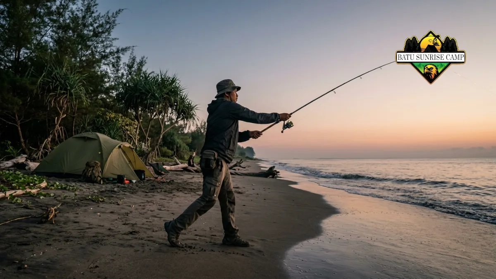

Itinerary camping dan mancing di pantai 2 hari 1 malam dimulai dengan tiba siang, mendirikan tenda sebelum sore, memancing saat senja, lalu mengulang sesi pagi.
- Dua hari satu malam memberi satu sesi senja dan satu sesi pagi, cukup bagi pemula tanpa membuat peserta kelelahan.
- Tenda sebaiknya berdiri sebelum matahari terbenam agar pemasangan tidak dilakukan dalam gelap.
- Dalam satu periode peringatan BMKG akhir Juli 2026, tercatat 36 perairan berkategori tinggi dan 215 berkategori sedang, sehingga rencana cadangan penting.
- Pembagian tugas rombongan membuat kegiatan berjalan rapi dan mengurangi kelalaian keselamatan.
- Pantai Sine di Tulungagung, yang dilaporkan buka 24 jam, adalah contoh lokasi yang jam kunjungnya fleksibel.
Seperti Apa Garis Besar Itinerary 2 Hari 1 Malam Camping dan Mancing?
Garis besarnya adalah tiba siang, mendirikan tenda, memancing senja, makan malam dan istirahat, memancing pagi, sarapan, membereskan lokasi, lalu pulang sebelum siang terik.
Berikut contoh jadwal yang dapat disesuaikan dengan kondisi rombongan dan aturan pantai:
| Waktu | Kegiatan | Catatan |
|---|---|---|
| Hari 1, 12.00 - 14.00 | Tiba, lapor pengelola, survei lokasi | Tanyakan zona memancing |
| Hari 1, 14.00 - 16.00 | Dirikan tenda, atur perlengkapan | Selesaikan sebelum sore |
| Hari 1, 16.00 - 18.00 | Sesi mancing senja | Gunakan titik yang aman |
| Hari 1, 18.00 - 22.00 | Makan malam, santai, istirahat | Jauhi bibir air |
| Hari 2, 05.00 - 08.00 | Sesi mancing pagi | Pakai lampu kepala |
| Hari 2, 08.00 - 10.00 | Sarapan, bongkar tenda, bersih-bersih | Bawa seluruh sampah |
| Hari 2, 10.00 - 12.00 | Pulang | Hindari panas terik |
Jadwal ini adalah contoh, bukan standar. Pantai yang jauh dari kota dapat menuntut waktu tempuh lebih panjang, sehingga jam tiba perlu digeser maju. Untuk memilih pantai yang cocok, mulailah dari panduan pantai untuk camping sekaligus mancing.
Jam Berapa Sebaiknya Tiba dan Mendirikan Tenda di Pantai?
Sebaiknya tiba sebelum tengah hari atau paling lambat siang, agar tenda berdiri sebelum sore dan seluruh perlengkapan tertata saat cahaya masih cukup.
Tiba lebih awal memberi waktu untuk melapor ke pengelola, memilih lahan datar yang jauh dari garis pasang, dan memeriksa kondisi sekitar. Pantai dengan jam buka fleksibel memudahkan perencanaan.
Jatim Times pada Januari 2026, misalnya, melaporkan bahwa Pantai Sine di Kalidawir, Tulungagung, buka 24 jam dan memiliki area camping, meski jam resmi tetap perlu dikonfirmasi.
Dirikan tenda dengan pasak yang kuat dan arah pintu menjauhi angin laut. Teknik menancapkan pasak di pasir dibahas pada artikel cara memasang pasak tenda di pasir.
Setelah tenda berdiri, simpan barang berharga dan peralatan pancing di tempat kering sebelum mulai memancing.
Kapan Waktu Terbaik untuk Sesi Mancing Saat Camping?
Waktu yang umum dipilih pemancing adalah senja dan subuh karena cahaya rendah dan suhu sejuk, tetapi hasil tangkapan tidak dijamin dan bergantung kondisi laut.
Senja memberi kesempatan memancing sambil menikmati matahari terbenam, sementara subuh memberi suasana tenang sebelum pantai ramai. Dua sesi ini cocok dengan format dua hari satu malam, karena tidak menuntut begadang panjang.
Atur durasi sesi, misalnya sekitar dua jam, agar peserta tetap segar. Siapkan umpan dan alat sebelum gelap, dan gunakan lampu kepala di sesi pagi.
Jika masih awal coba mancing di Pantai kalian dapat membaca teknik memancing di pantai saat camping untuk memahami urutan dasarnya.
Perhatikan juga pasang surut di lokasi. Tanyakan kepada warga kapan air naik, supaya sesi memancing tidak berakhir di titik yang tergenang.

Sesi mancing subuh menyajikan suasana tenang dan suhu sejuk di pesisir sebelum aktivitas wisata pantai dimulai.
Apa Saja Kegiatan yang Cocok untuk Malam Hari di Pantai?
Kegiatan malam yang cocok adalah makan bersama, ngobrol, mengamati bintang, dan istirahat lebih awal, dengan api unggun hanya bila diizinkan dan dijaga jaraknya dari tenda.
Malam di pantai biasanya berangin dan lembap, sehingga pakaian hangat dan alas tidur yang baik membuat istirahat lebih nyaman. Hindari berjalan ke karang di malam hari, karena permukaan licin dan gelap sulit dilihat.
Jika ingin memasak atau membakar ikan, periksa terlebih dahulu apakah pengelola mengizinkan api. Aturan keselamatan api di kawasan pantai dibahas pada artikel aturan dan etika keselamatan BBQ di kawasan pantai. Padamkan api sepenuhnya sebelum tidur dan simpan sisa makanan di wadah tertutup.
Bagaimana Menyusun Rencana Cadangan Saat Cuaca Berubah?
Rencana cadangan disusun dengan menetapkan batas keputusan seperti kategori gelombang BMKG, menyiapkan alternatif lokasi atau tanggal, dan menyepakati siapa yang memutuskan penundaan.
Data BMKG menunjukkan kondisi laut dapat sangat bervariasi. Pada periode peringatan akhir Juli 2026, laman BMKG mencatat 36 perairan berkategori tinggi (2,5 sampai 4 meter) dan 215 perairan berkategori sedang (1,25 sampai 2,5 meter). Karena itu, jangan menganggap kondisi akan sama dengan perjalanan sebelumnya.
Tentukan sebelum berangkat: jika kategori gelombang naik ke tinggi, sesi memancing dibatalkan dan tenda dipindah lebih jauh dari air. Jika kondisi memburuk drastis, rombongan menunda atau pulang lebih awal.
Pantau peringatan gelombang tinggi BMKG sehari sebelum dan pada pagi keberangkatan. Rencana cadangan juga mencakup titik kumpul dan nomor kontak darurat pengelola.
Bagaimana Membagi Peran dalam Rombongan Camping dan Mancing?
Pembagian peran dilakukan dengan menunjuk penanggung jawab tenda, bekal, keselamatan, dan kebersihan, sehingga tugas tidak tumpang tindih dan tidak ada hal penting terlewat.
Contoh pembagian yang mudah dijalankan:
- Penanggung jawab tenda: memilih lahan, memasang, dan membongkar tenda.
- Penanggung jawab bekal: menyiapkan makanan, air, dan pendingin.
- Penanggung jawab keselamatan: memantau cuaca, membawa P3K, dan menjaga jarak titik memancing.
- Penanggung jawab kebersihan: memastikan seluruh sampah, termasuk senar, dibawa pulang.
Rombongan kecil dapat merangkap peran, tetapi tetap tunjuk satu orang yang bertugas mengingatkan batas keselamatan. Peran yang jelas juga membantu pemula memahami tugasnya tanpa merasa kewalahan.
Bagaimana Menutup Hari Kedua dan Pulang dengan Rapi?
Hari kedua ditutup dengan sesi pagi singkat, sarapan, membongkar tenda, memeriksa lokasi dari sisa sampah, lalu pulang sebelum siang terik agar perjalanan lebih nyaman.
Bongkar tenda setelah embun mengering bila memungkinkan, atau bungkus terpisah agar tidak lembap di perjalanan.
Periksa seluruh area, termasuk sekitar titik memancing, untuk memastikan tidak ada senar, kail, atau kemasan tertinggal. Pamit kepada pengelola dan ucapkan terima kasih kepada warga yang membantu.
Setelah tiba di rumah, cuci dan keringkan peralatan pancing dengan air tawar agar tidak berkarat, lalu jemur tenda sebelum disimpan. Kebiasaan ini memperpanjang umur peralatan dan membuat perjalanan berikutnya lebih siap.
Kesimpulan
Itinerary dua hari satu malam paling mudah dijalankan dengan tiba siang, tenda berdiri sebelum sore, dua sesi mancing, rencana cadangan cuaca, dan pembagian peran jelas.
Salin tabel jadwal di atas sebagai kerangka, lalu sesuaikan dengan jarak tempuh dan aturan pantai. Informasi dalam artikel ini bersifat umum dan perlu disesuaikan dengan kondisi serta peraturan di lokasi yang dipilih.

Pertanyaan yang sering diajukan (FAQ)